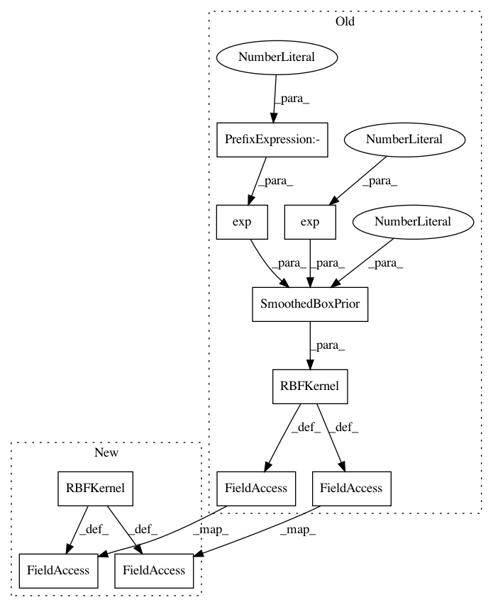

6f35c0bc5aac6c4095f68128abec46705ca25237,test/examples/test_kissgp_kronecker_product_regression.py,GPRegressionModel,__init__,#GPRegressionModel#Any#Any#Any#,43
Before Change
def __init__(self, train_x, train_y, likelihood):
super(GPRegressionModel, self).__init__(train_x, train_y, likelihood)
self.mean_module = ConstantMean(prior=SmoothedBoxPrior(-1, 1))
self.base_covar_module = ScaleKernel(
RBFKernel(ard_num_dims=2, lengthscale_prior=SmoothedBoxPrior(exp(-3), exp(3), sigma=0.1))
)
self.covar_module = GridInterpolationKernel(self.base_covar_module, grid_size=64, num_dims=2)
def forward(self, x):
mean_x = self.mean_module(x)
After Change
def __init__(self, train_x, train_y, likelihood):
super(GPRegressionModel, self).__init__(train_x, train_y, likelihood)
self.mean_module = ConstantMean(prior=SmoothedBoxPrior(-1, 1))
self.base_covar_module = RBFKernel(ard_num_dims=2)
self.covar_module = GridInterpolationKernel(self.base_covar_module, grid_size=64, num_dims=2)
def forward(self, x):
mean_x = self.mean_module(x)
In pattern: SUPERPATTERN
Frequency: 3
Non-data size: 10
Instances
Project Name: cornellius-gp/gpytorch
Commit Name: 6f35c0bc5aac6c4095f68128abec46705ca25237
Time: 2020-06-08
Author: gpleiss@gmail.com
File Name: test/examples/test_kissgp_kronecker_product_regression.py
Class Name: GPRegressionModel
Method Name: __init__
Project Name: cornellius-gp/gpytorch
Commit Name: d436d96eecfa86f4847e9b8af235976df30efaca
Time: 2018-12-30
Author: gpleiss@gmail.com
File Name: test/examples/test_kissgp_multiplicative_regression.py
Class Name: GPRegressionModel
Method Name: __init__
Project Name: cornellius-gp/gpytorch
Commit Name: d436d96eecfa86f4847e9b8af235976df30efaca
Time: 2018-12-30
Author: gpleiss@gmail.com
File Name: test/examples/test_kissgp_additive_regression.py
Class Name: GPRegressionModel
Method Name: __init__